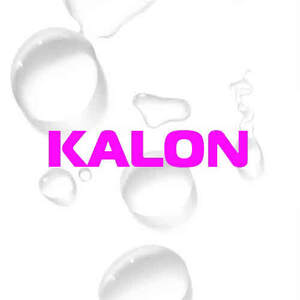

Trade Mark Journal No.2025/038 19 September 2025
UK00004253703 23 August 2025 (3)

- Class 3
- Skincare cosmetics; Anti-aging skincare preparations; Anti-aging moisturizers used as cosmetics; Skincare preparations; Moisturisers [cosmetics]; Skin moisturizers used as cosmetics; Anti-aging moisturizers; Anti-ageing moisturiser; Suncare lotions [for cosmetic use]; Cosmetic moisturisers; Anti-ageing creams [for cosmetic use]; Cosmetic products in the form of aerosols for skincare; Moisturising skin lotions [cosmetic]; Anti-aging creams [for cosmetic use]; Beauty serums; Acne cleansers, cosmetic; Facial moisturisers [cosmetic]; Non-medicated skincare preparations; Skin cleansers [cosmetic]; Moisturising skin creams [cosmetic]; Suncare lotions; Beauty serums with anti-ageing properties; Anti-aging creams; Facial creams [cosmetics]; Anti-ageing creams; After-sun oils [cosmetics]; Anti-ageing serums for cosmetic purposes; Skin moisturisers; Skin care lotions [cosmetic]; Skin care cosmetics; Beauty lotions; Skin moisturizer; Skin moisturizers; Skin moisturiser; Skin balms [cosmetic]; Beauty care cosmetics; Skin care creams [cosmetic]; Cosmetic creams for skin care; After-sun lotions [for cosmetic use]; Moisturisers; Skin recovery creams [cosmetics]; Cosmetics; Cosmetic creams for the skin; Skin creams [cosmetic]; Skin creams [for cosmetic use]; Facial cleansers [cosmetic]; Anti-wrinkle creams [for cosmetic use]; Sunscreen creams [for cosmetic use]; Cosmetic nourishing creams; Skin masks [cosmetics]; Self-tanning preparations [cosmetics]; Skin cleansers; Cleansing creams [cosmetic]; Moisturiser; Moisturizers; Anti-ageing serum; Skin moisturizer masks; Hairstyling serums; Cosmetic facial lotions; Facial lotions [cosmetic]; Non-medicated skin serums; Exfoliants for the care of the skin; Body and facial creams [cosmetics]; Facial moisturizers; Cosmetic creams and lotions; Skin care oils [cosmetic]; Exfoliants for the cleansing of the skin; Beauty creams; Anti-aging serum for cosmetic use; Moisturising body lotion [cosmetic]; Beauty balm creams; Hair care lotions [for cosmetic use]; Skin lotions; Lotions for the skin; Skin fresheners [cosmetics]; After-sun milks [cosmetics]; Sunscreens [for cosmetic use]; Body creams [cosmetics]; Skin toners [cosmetic]; Cosmetic massage creams; Skin cleansing lotion; Hair care creams [for cosmetic use]; Sunscreen [for cosmetic use]; Tanning oils [cosmetics]; Skin make-up; Facial creams [cosmetic]; Facial creams [for cosmetic use]; Cosmetic hair lotions; Sun care lotions [for cosmetic use]; Exfoliating creams; Suntan lotion [cosmetics]; Skin cleansers [non-medicated]; After-sun milk [cosmetics]; Hair moisturisers; Moisturizing creams; Aromatherapy creams; Cosmetic products for the shower; Creams for tanning the skin; Skin cream [for cosmetic use]; Cosmetics for use in the treatment of wrinkled skin; Skin lotion; Organic cosmetics; Cosmetics for use on the skin; Creams (Cosmetic -); Cosmetic creams; Night creams [cosmetics]; Skin hydrators; Anti-aging cream; Aromatherapy lotions; Skin hydrators for cosmetic purposes; Cleansing lotions; After-sun lotions; Hair care serums; Anti-wrinkle cream [for cosmetic use]; Anti-wrinkle creams; Facial gels [cosmetics]; Facial cleansers; Beauty creams for body care; Moisturising creams; Cosmetic preparations for skin firming; Cosmetic products in the form of aerosols for skin care; Exfoliant creams; Moisturising gels [cosmetic]; Colour cosmetics for the skin; Skin creams; Creams for the skin; Hair moisturizers; Moisturizing preparations for the skin; Cosmetics for suntanning; Non-medicated skin lotions; Creams for firming the skin; Dermatological creams [other than medicated]; Shampoo; Hair shampoo; Shampoos; Hair shampoos; Waterless shampoo; Shampoo bars; Non-medicated hair shampoos; Dry shampoos; Shampoo for animals; Emollient shampoos; Hair lotion; Waterless shampoos; Shampoos for human hair; Hair conditioner; Non-medicated shampoos; Pet shampoos; Hair moisturising conditioners; Hair lotions; Body shampoos; Hair conditioner bars; Hair rinses; Hair gel; Shampoos for pets; Pets (Shampoos for -); Hair conditioners; Hair styling lotions; Hair balm; Non-medicated hair lotions; Hair spray; Hair gels; Hair sprays; Mousses [toiletries] for use in styling the hair; Non-medicated balm for hair; Hair styling gel; Oils for hair conditioning; Hair serums; Bath lotion; Hair care lotions; Conditioners for treating the hair; Hair balsam; Hair mousse; Hair styling gels; Styling gels for the hair; Hair oils; Hair creams; Styling sprays for the hair; Hair styling spray; Shampoos for pets [non-medicated grooming preparations]; Shower and bath gel; Bath and shower gel; Bath soap; Roll-on deodorants [toiletries]; Conditioners in the form of sprays for the scalp; After-shave lotions; Hair-washing powder; Hair bleaches; Shower gel; Gels for fixing hair; Hair cream; Bath and shower oils [non-medicated]; Conditioners for use on the hair; Hair colourants.
Laura Wolfe-Parry